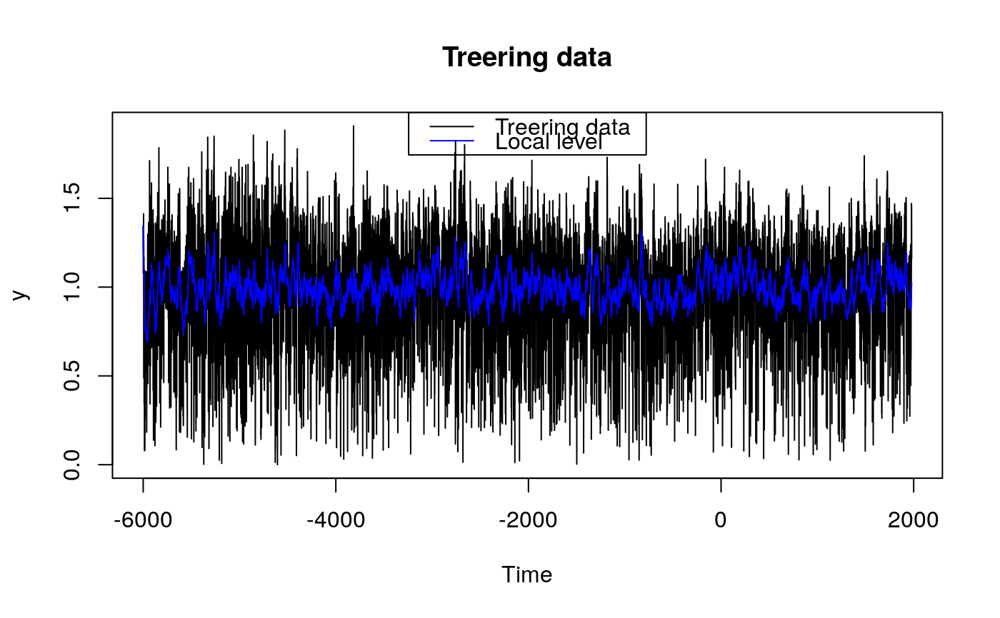
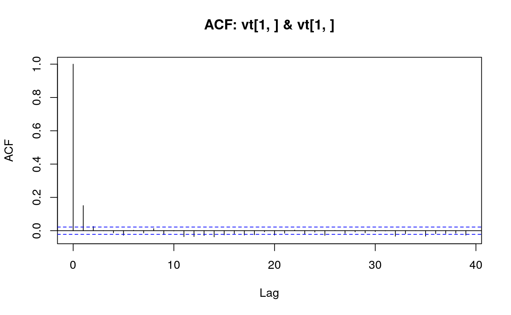

Plotting method for objects of class fkf. This function
provides tools for graphical analysis of the Kalman filter output:
Visualization of the state vector, QQ-plot of the individual
residuals, QQ-plot of the Mahalanobis distance, auto- as well as
crosscorrelation function of the residuals.
# S3 method for fkf plot( x, type = c("state", "resid.qq", "qqchisq", "acf"), CI = 0.95, at.idx = 1:nrow(x$at), att.idx = 1:nrow(x$att), ... )
| x | The output of |
|---|---|
| type | A string stating what shall be plotted (see Details). |
| CI | The confidence interval in case |
| at.idx | An vector giving the indexes of the predicted state variables
which shall be plotted if |
| att.idx | An vector giving the indexes of the filtered state variables
which shall be plotted if |
| ... |
Invisibly returns an list with components:
distance | The Mahalanobis distance of the residuals as a vector of length \(n\). |
std.resid | The standardized residuals as an \(d \times n\)-matrix. It should hold that \(std.resid_{ij} \; iid \sim N_d(0, I)\), |
where \(d\) denotes the dimension of the data and \(n\) the number of observations.
The argument type states what shall be plotted. type
must partially match one of the following:
stateThe state variables are plotted. By the
arguments at.idx and att.idx, the user can specify
which of the predicted (\(a_{t}\)) and filtered
(\(a_{t|t}\)) state variables will be drawn.
resid.qqDraws a QQ-plot for each residual-series invt.
qqchisqA Chi-Squared QQ-plot will be drawn to graphically test for multivariate normality of the residuals based on the Mahalanobis distance.
acfCreates a pairs plot with the autocorrelation
function (acf) on the diagonal panels and the
crosscorrelation function (ccf) of the residuals on the
off-diagnoal panels.
## <---------------------------------------------------------------------------> ## Example 3: Local level model for the treering data ## <---------------------------------------------------------------------------> ## Transition equation: ## alpha[t+1] = alpha[t] + eta[t], eta[t] ~ N(0, HHt) ## Measurement equation: ## y[t] = alpha[t] + eps[t], eps[t] ~ N(0, GGt) y <- treering y[c(3, 10)] <- NA # NA values can be handled ## Set constant parameters: dt <- ct <- matrix(0) Zt <- Tt <- array(1,c(1,1,1)) a0 <- y[1] # Estimation of the first width P0 <- matrix(100) # Variance of 'a0' ## Estimate parameters: fit.fkf <- optim(c(HHt = var(y, na.rm = TRUE) * .5, GGt = var(y, na.rm = TRUE) * .5), fn = function(par, ...) -fkf(HHt = array(par[1],c(1,1,1)), GGt = array(par[2],c(1,1,1)), ...)$logLik, yt = rbind(y), a0 = a0, P0 = P0, dt = dt, ct = ct, Zt = Zt, Tt = Tt, check.input = FALSE) ## Filter tree ring data with estimated parameters: fkf.obj <- fkf(a0, P0, dt, ct, Tt, Zt, HHt = array(fit.fkf$par[1],c(1,1,1)), GGt = array(fit.fkf$par[2],c(1,1,1)), yt = rbind(y)) ## Plot the width together with fitted local levels: plot(y, main = "Treering data")